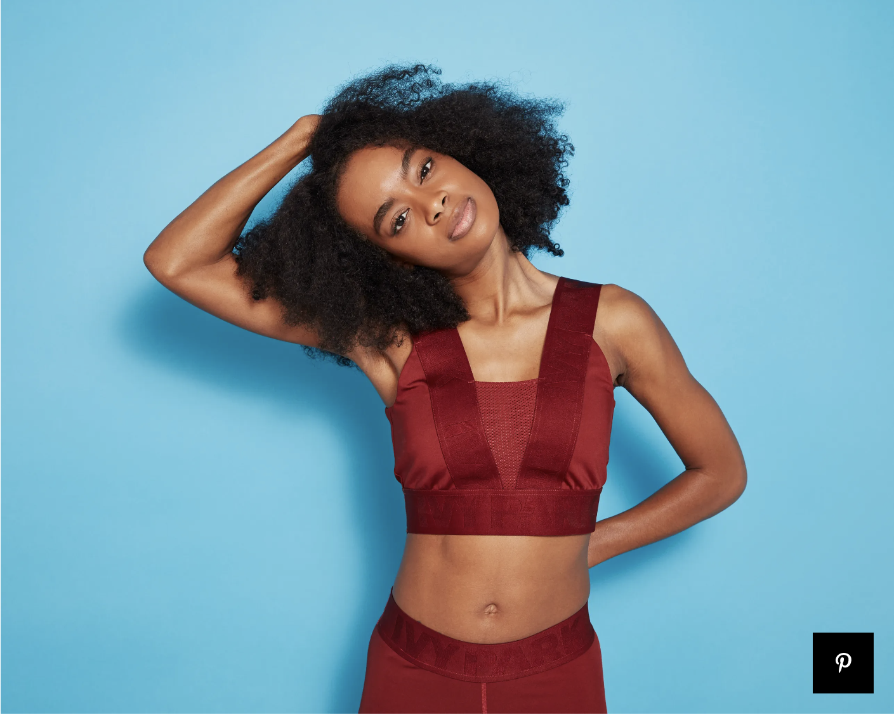
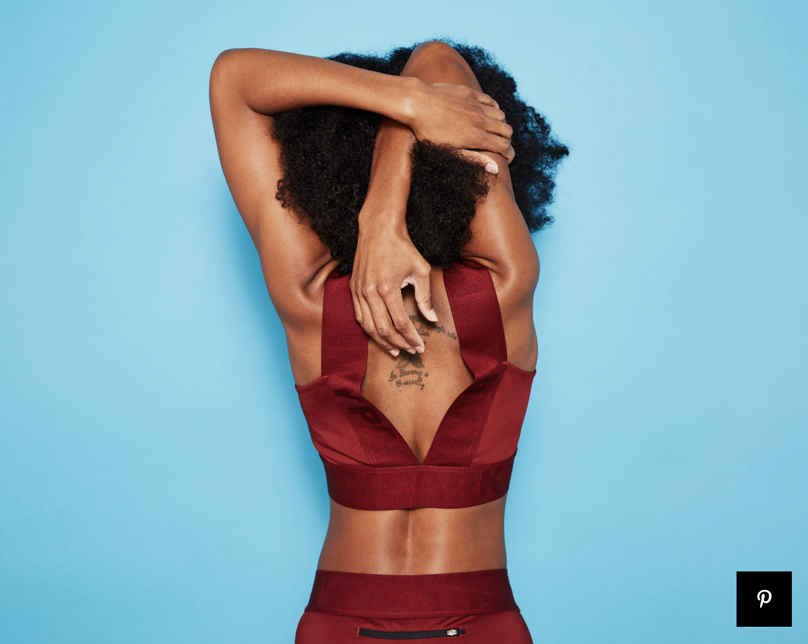
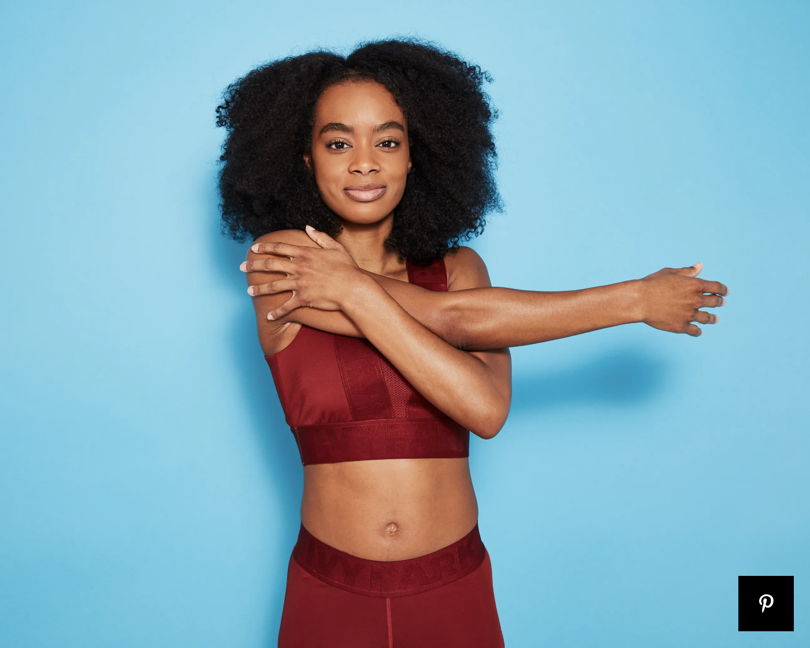
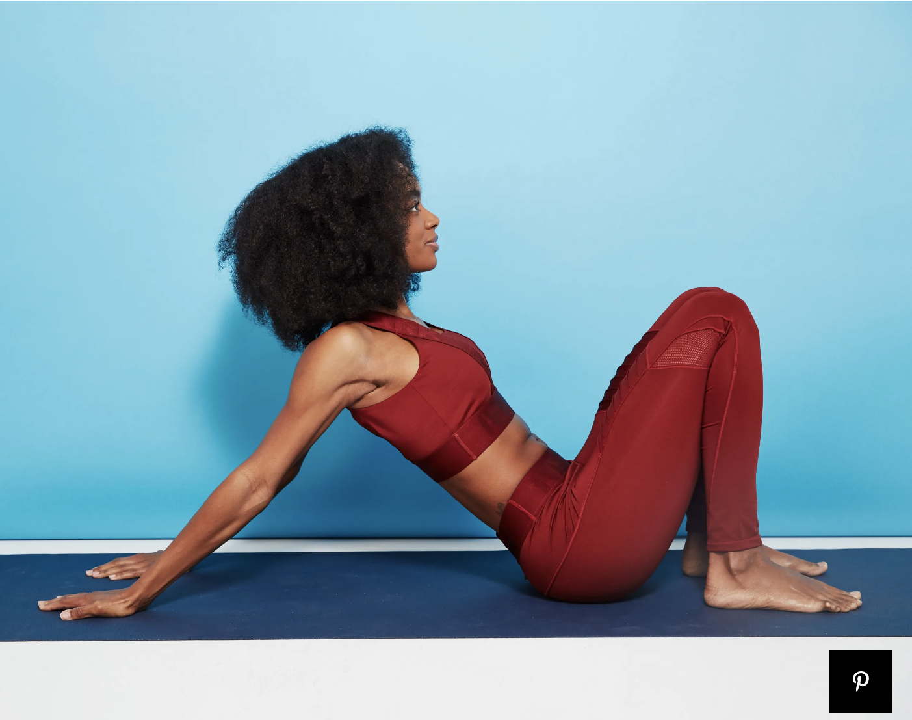
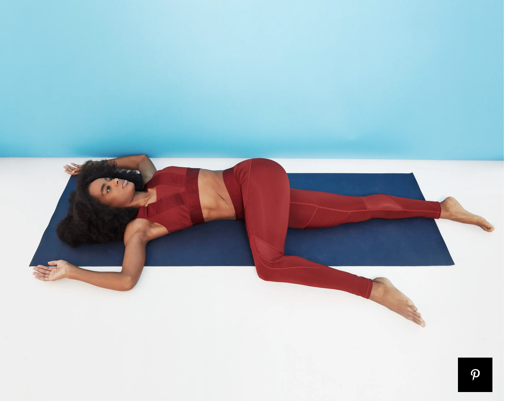
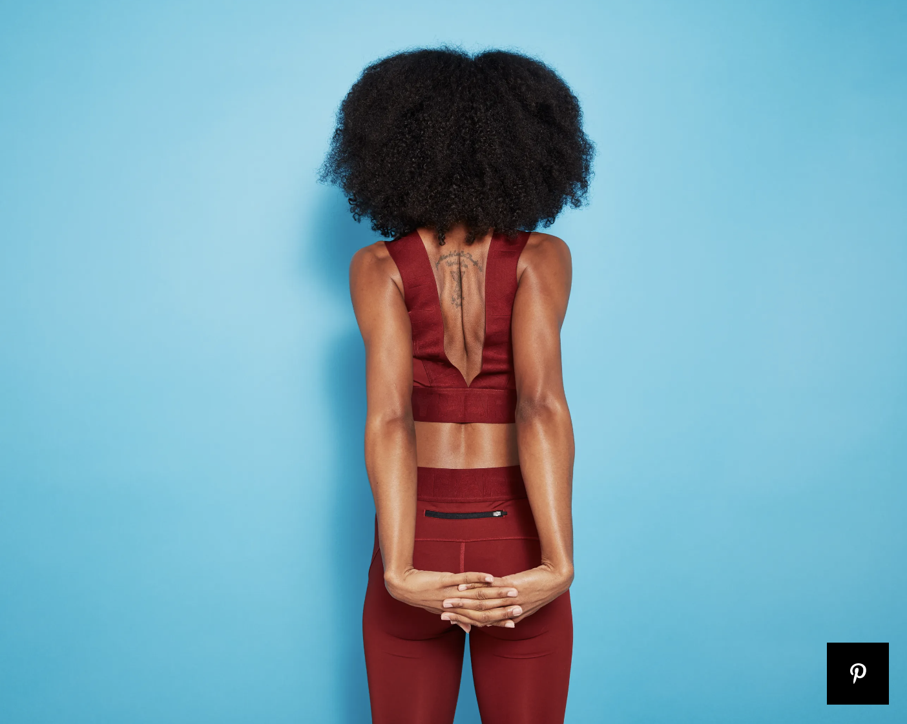
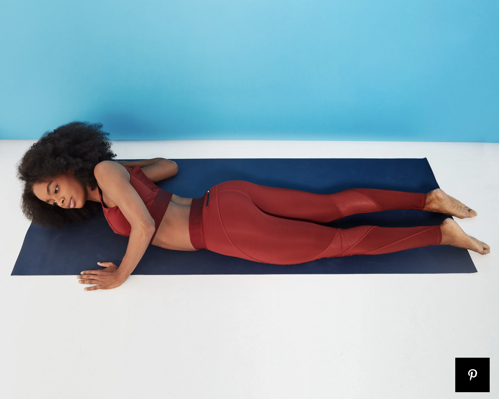
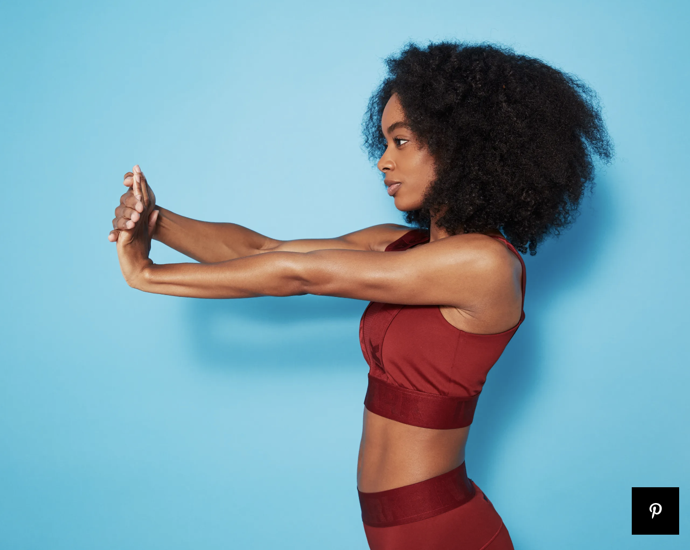

The following flexibility exercises emphasize the upper body. Do them as often as you can and you'll notice less tightness and maybe even more productivity
Source: Amy Marturana Winderl, C.P.T
Images: Katie Thompson

Upper Trapezius (Neck) Stretch
Hold for at least 30 seconds and then repeat on the other side.

Overhead Triceps and Shoulder Stretch
Hold for at least 30 seconds and then repeat on the other side.

Cross-Body Shoulder Stretch
Hold for at least 30 seconds and then repeat on the other side.

Biceps Stretch
Hold for at least 30 seconds and then repeat on the other side.

Reclined Spinal Twist
Hold for at least 30 seconds and then repeat on the other side.

Chest Stretch
Hold for at least 30 seconds and then repeat on the other side.

Lying Pectoral Stretch
Hold for at least 30 seconds and then repeat on the other side.

Wrist Extension Stretch
Hold for at least 30 seconds and then repeat on the other side.